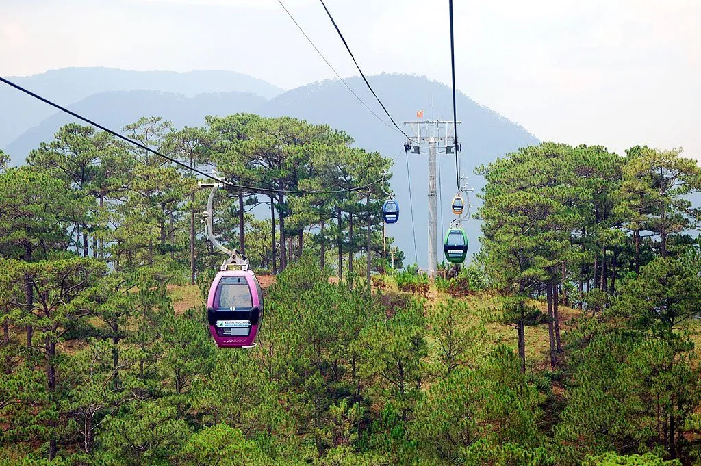
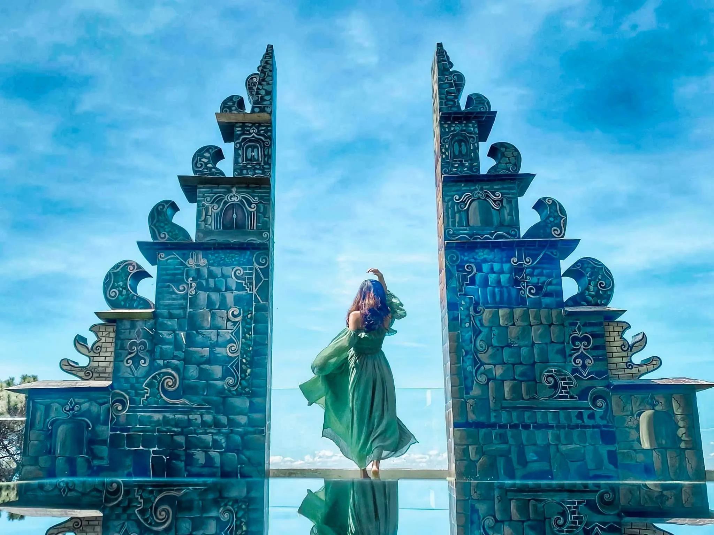
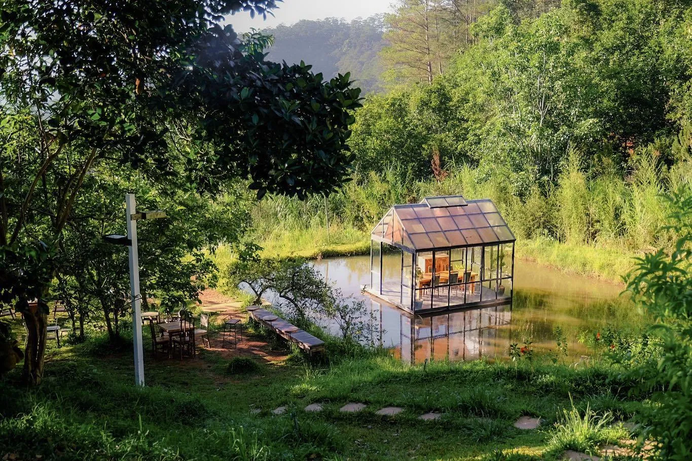

Đèo Prenn – cung đường quyến rũ níu chân phượt thủ 2025

Mục lục bài viết
- 1. Giới thiệu về đèo Prenn
- 2. Hành trình hình thành và phát triển của đèo Prenn
- 3. Cách di chuyển đến đèo Prenn Đà Lạt
-
4. Trải nghiệm cung đường đèo Prenn – Vẻ đẹp thiên nhiên cuốn hút mọi ánh nhìn
- 4.1. Khung cảnh thiên nhiên ngoạn mục và bình yên ở đèo Prenn
- 4.2. Cung đường quanh co đầy mê lực với dân phượt tại đèo Prenn
- 4.3. Thác Prenn – Vẻ đẹp nguyên sơ giữa đại ngàn giữa đèo Prenn
- 4.4. Biệt thự bỏ hoang đèo Prenn – Gợi trí tò mò và khám phá
- 4.5. Vườn mai anh đào rực rỡ mỗi độ xuân về đèo Prenn
- 5. Bí kíp an toàn khi vượt đèo Prenn – Phượt thủ cần lưu ý!
-
6. Những điểm dừng chân thú vị trên cung đường đèo Prenn
- 6.1. Thác Datanla – Tuyệt tác giữa đại ngàn trên cung đường đèo Prenn
- 6.2. Đồi cáp treo Robin – Góc nhìn mới từ trên cao dọc tuyến đèo Prenn
- 6.3. Khu du lịch Lá Phong – Không gian Nhật Bản độc đáo gần đèo Prenn giữa lòng Đà Lạt
- 6.4. Cổng Trời Bali – Green Hills: Điểm check-in nổi bật gần đèo Prenn Đà Lạt
- 6.5. Quán cafe ven đèo Prenn – Ngắm rừng thông, nhâm nhi cà phê giữa thiên nhiên Đà Lạt
- 7. Điểm dừng chân lý tưởng sau hành trình đèo Prenn – Tiệm Nướng & Chill Xóm Lèo
Trong hành trình khám phá phố núi Đà Lạt, đèo Prenn hiện ra như một bức tranh thiên nhiên sống động, nổi bật với những khúc cua mềm mại giữa núi rừng trùng điệp. Nơi đây không chỉ mang đến vẻ đẹp hoang sơ, hùng vĩ mà còn là điểm đến đầy cảm xúc cho những ai ưa thích sự mạo hiểm và trải nghiệm.

Băng qua đèo Prenn, du khách sẽ được chiêm ngưỡng một trong những cung đường đẹp nhất xứ sở sương mù. Vẻ đẹp ngoạn mục cùng những vòng cua liên tục tạo nên cảm giác phấn khích, khiến hành trình trở nên đáng nhớ hơn bao giờ hết. Nếu bạn là người yêu thích khám phá, đừng bỏ lỡ cơ hội chinh phục cung đường nên thơ này trong chuyến đi Đà Lạt sắp tới.
1. Giới thiệu về đèo Prenn
Vị trí: Số 20, cao tốc Liên Khương – Prenn, phường 3, thành phố Đà Lạt, tỉnh Lâm Đồng.
Đèo Prenn được mệnh danh là một trong những cung đường đèo đẹp nhất tại Đà Lạt, mang trong mình vẻ đẹp tự nhiên quyến rũ cùng chiều dài hơn 11km. Nằm giữa khung cảnh núi rừng hùng vĩ của Lâm Đồng, con đèo này không chỉ là tuyến đường nối liền thành phố Đà Lạt với các khu vực lân cận mà còn là điểm đến lý tưởng cho những ai yêu thích khám phá.
Tên gọi “Prenn” bắt nguồn từ ngôn ngữ Chăm Pa xưa, mang ý nghĩa là “xâm lược” hay “chiếm đóng”. Theo lời kể của người dân địa phương, cái tên này liên quan đến thời kỳ xảy ra các cuộc giao tranh giữa người Chăm và cư dân bản địa. Ngoài ra, tên đèo còn gắn liền với thác Prenn – một thắng cảnh nổi tiếng gần đó, góp phần làm nên nét đặc trưng và giá trị lịch sử của vùng đất này.

2. Hành trình hình thành và phát triển của đèo Prenn
Ngày nay, khi băng qua đèo Prenn – một trong những cung đường đèo nổi bật tại Đà Lạt – ít người nhận ra rằng nơi đây từng ghi dấu nhiều sự kiện lịch sử đáng chú ý. Công trình xây dựng tuyến đèo hiện tại được khởi công vào tháng 2 năm 1943 dưới sự thi công của nhà thầu Gross, nhằm thay thế tuyến đường cũ dẫn từ thác Prenn vào trung tâm thành phố. Tuyến đường mới được thiết kế với 79 khúc cua, trong đó một số đoạn có bán kính lên đến 1.000 mét, tạo nên sự uyển chuyển đặc trưng của cung đường đèo này.
Đến đầu những năm 2000, trước áp lực gia tăng của nhu cầu giao thông, chính quyền địa phương đã quyết định khôi phục lại tuyến đường đèo cũ và hình thành thêm đèo Mimosa song song với đèo Prenn. Mục tiêu là để phân luồng giao thông, giảm tải cho tuyến đèo chính và phục vụ việc đi lại giữa Đà Lạt và các khu vực lân cận một cách hiệu quả hơn.
Tuy nhiên, kế hoạch tổ chức giao thông một chiều giữa hai đèo đã không được triển khai đúng như dự định. Thay vào đó, đèo Mimosa chủ yếu được sử dụng để vận chuyển nông sản từ Đà Lạt đi các tỉnh thành khác trong khu vực.
Một cột mốc quan trọng xảy ra vào năm 2016, khi Bộ Giao thông Vận tải quyết định điều chỉnh lộ trình của Quốc lộ 20, chuyển tuyến chính sang đèo Mimosa. Kể từ đó, đèo Prenn được phân cấp trở thành tuyến đường địa phương, do Sở Giao thông Vận tải tỉnh Lâm Đồng quản lý. Sự thay đổi này đã góp phần tái cấu trúc mạng lưới giao thông tại Đà Lạt, tạo nên sự phân tách chức năng rõ ràng giữa các tuyến đèo, đồng thời giúp giao thông khu vực trở nên linh hoạt hơn.

3. Cách di chuyển đến đèo Prenn Đà Lạt
Việc chinh phục đèo Prenn không quá phức tạp, đặc biệt với những tín đồ xê dịch yêu thích khám phá những cung đường đèo ngoạn mục. Từ nhiều hướng khác nhau, bạn đều có thể dễ dàng tiếp cận địa điểm này.
Nếu khởi hành từ TP. Hồ Chí Minh, bạn nên đi sớm để tận dụng thời gian. Tuyến đường phổ biến là chạy theo Quốc lộ 1K qua Biên Hòa, sau đó nhập vào Quốc lộ 1A để đến ngã tư Dầu Giây – nơi lý tưởng để dừng chân nghỉ ngơi, ăn sáng và chuẩn bị cho chặng đường dài.
Từ ngã ba Dầu Giây, bạn rẽ trái vào Quốc lộ 20, con đường dẫn thẳng đến Đà Lạt. Trên hành trình này, bạn sẽ vượt qua đèo Bảo Lộc – điểm bắt đầu cảm nhận rõ nét khí hậu se lạnh của vùng cao nguyên. Hãy tranh thủ dừng lại nghỉ, đổ xăng đầy bình và mặc thêm áo ấm để sẵn sàng tiếp tục cuộc hành trình lên đèo Prenn.
Trong trường hợp bạn di chuyển đến Đà Lạt bằng phương tiện công cộng như máy bay hoặc xe khách, việc thuê xe máy tại trung tâm thành phố là lựa chọn phù hợp nếu bạn muốn tự mình trải nghiệm cảm giác lái xe qua đèo. Ngoài ra, dịch vụ taxi hoặc thuê xe có tài xế địa phương cũng là phương án an toàn và tiện lợi cho những ai chưa quen đường đèo hoặc đi theo nhóm đông người.

4. Trải nghiệm cung đường đèo Prenn – Vẻ đẹp thiên nhiên cuốn hút mọi ánh nhìn
Mang dáng vẻ hoang sơ đầy mê hoặc, đèo Prenn như một kiệt tác của thiên nhiên, nơi những cung đường uốn lượn hòa quyện với sắc xanh của núi rừng và thanh âm réo rắt từ những dòng thác. Mỗi khúc cua, mỗi đoạn dốc đều như vẽ nên một bức tranh sống động, khiến du khách không khỏi rung động trước vẻ đẹp của cao nguyên Đà Lạt.
4.1. Khung cảnh thiên nhiên ngoạn mục và bình yên ở đèo Prenn
Tên gọi “Prenn” đã gợi mở một hành trình khám phá đầy hấp dẫn. Dọc theo cung đèo, bạn sẽ đi qua nhiều điểm đến thú vị, được bao quanh bởi rừng thông bạt ngàn và những triền đồi trải dài. Khác với những đèo có địa hình hiểm trở, tuyến đường này khá “dễ thở” với độ dốc vừa phải, không có quá nhiều khúc cua gắt, mang lại cảm giác an toàn và thư thái khi di chuyển, ngay cả đối với những người không quen chạy đường đèo.
Đặc biệt, cung đường Prenn là một điểm đến lý tưởng cho những ai yêu thích du lịch phượt. Cảm giác chinh phục từng vòng cua nhẹ nhàng, được gió trời mơn man và thiên nhiên ôm trọn khiến chuyến đi trở nên đầy cảm xúc.
Trên đường đi, bạn sẽ bắt gặp nhiều cảnh sắc đặc trưng của xứ sở sương mù: rừng thông xanh rì rào trong gió, thung lũng hoa rực rỡ sắc màu, những cánh đồng rau trải dài hay các nông trại nhỏ nằm nép mình bên sườn núi. Tất cả tạo nên một khung cảnh yên bình, là nơi lý tưởng để bạn tạm gác lại nhịp sống hối hả và hòa mình vào thiên nhiên.

4.2. Cung đường quanh co đầy mê lực với dân phượt tại đèo Prenn
Không chỉ là lối dẫn vào Đà Lạt, đèo Prenn còn là “thánh địa” cho những tay lái đam mê chinh phục cung đường. Những khúc cua thoai thoải, mềm mại như dải lụa vắt ngang sườn núi tạo nên sự cuốn hút khó cưỡng. Mỗi vòng xoay mang đến một trải nghiệm thị giác mới, vừa thách thức kỹ năng lái xe, vừa kích thích cảm xúc khám phá của dân phượt. Được hòa mình giữa thiên nhiên rừng núi, băng qua những đoạn đèo mượt mà, cảm giác hứng khởi như dâng trào theo từng cú vặn tay ga.
4.3. Thác Prenn – Vẻ đẹp nguyên sơ giữa đại ngàn giữa đèo Prenn
Trên hành trình chinh phục đèo Prenn, bạn sẽ bắt gặp một trong những điểm dừng chân nổi tiếng – thác Prenn. Nằm e ấp giữa rừng thông bạt ngàn, ngọn thác mang vẻ đẹp tự nhiên đầy hoang sơ và thơ mộng. Dòng nước đổ từ trên cao xuống tung bọt trắng xóa, tựa như tấm rèm lụa óng ánh giữa lòng núi rừng xanh thẳm.
Không gian xung quanh thác mát lạnh, trong lành, khiến bất kỳ ai dừng lại cũng dễ dàng bị cuốn hút. Đây không chỉ là nơi lý tưởng để thư giãn, mà còn là điểm check-in ấn tượng cho những tín đồ yêu thiên nhiên và đam mê nhiếp ảnh.

4.4. Biệt thự bỏ hoang đèo Prenn – Gợi trí tò mò và khám phá
Ẩn hiện bên vệ đèo Prenn là một căn biệt thự cổ xưa từng khiến không ít người rùng mình vì những lời đồn huyền bí. Gắn liền với các câu chuyện ly kỳ, biệt thự này từng được mệnh danh là “nhà ma đèo Prenn” – điểm đến khiến nhiều phượt thủ tò mò khi ngang qua.
Dù mang dáng vẻ âm u trong quá khứ, ngày nay nơi này đã được cải tạo lại phần nào, khoác lên diện mạo mới sáng sủa hơn. Người dân địa phương thậm chí gọi nó bằng cái tên nhẹ nhàng hơn như “Biệt thự trắng” hay “Biệt thự đèo Prenn”. Dù tin hay không, việc dừng lại tại đây vẫn là một trải nghiệm thú vị, pha lẫn chút kỳ bí cho chuyến hành trình của bạn.

4.5. Vườn mai anh đào rực rỡ mỗi độ xuân về đèo Prenn
Một trong những điều làm nên vẻ thơ mộng đặc trưng của đèo Prenn vào mùa xuân chính là vườn mai anh đào trải dọc triền núi. Kéo dài từ khu vực giáp ranh huyện Đức Trọng đến đỉnh đèo, khu vườn rực rỡ với hàng ngàn cây mai anh đào nở rộ mỗi dịp Tết đến xuân về.
Khi những chùm hoa hồng nhạt bung nở, không gian trở nên lung linh như tranh thủy mặc. Màu hồng nhẹ nhàng đan xen trong nền xanh thăm thẳm của rừng thông khiến khung cảnh nơi đây như bước ra từ cổ tích. Vào những ngày nắng nhẹ đầu xuân, dạo bước hoặc dừng xe chụp hình tại đây chắc chắn là trải nghiệm mà du khách không thể bỏ lỡ.
5. Bí kíp an toàn khi vượt đèo Prenn – Phượt thủ cần lưu ý!
Việc di chuyển qua đèo Prenn tuy không quá khắc nghiệt như một số cung đường đèo khác, nhưng vẫn đòi hỏi người lái xe phải vững tay lái, tuân thủ luật giao thông và có sự chuẩn bị kỹ lưỡng để đảm bảo hành trình an toàn và trọn vẹn. Dưới đây là một số lưu ý quan trọng bạn không nên bỏ qua:
-
Tránh di chuyển vào sáng sớm và tối muộn: Khí hậu Đà Lạt đặc biệt nhiều sương mù dày đặc vào khoảng từ 6 giờ sáng đến 7 giờ tối, gây hạn chế tầm nhìn nghiêm trọng. Tốt nhất nên lên kế hoạch đi vào ban ngày, khi thời tiết khô ráo, trời quang.
-
Duy trì tốc độ ổn định: Không nên phóng nhanh, vượt ẩu hay đánh lái gấp khi vào cua. Luôn giữ khoảng cách an toàn với xe phía trước để kịp thời xử lý trong mọi tình huống bất ngờ.
-
Kiểm tra kỹ phương tiện: Trước khi xuống đèo, hãy chắc chắn rằng hệ thống phanh hoạt động tốt, lốp xe không mòn, đèn pha – xi nhan rõ ràng.
-
Tuân thủ biển báo và gương phản chiếu: Đèo Prenn có nhiều gương cầu lồi/cầu lõm tại khúc cua giúp người lái quan sát tốt hơn – đừng bỏ qua! Đặc biệt, tuyệt đối không dừng xe tại các điểm khuất tầm nhìn.
-
Ưu tiên xe số hoặc xe côn tay: Những dòng xe này giúp bạn dễ kiểm soát tốc độ và phanh máy khi xuống dốc. Nếu dùng xe ga, hãy nắm rõ cách hãm phanh đúng kỹ thuật, tránh thắng gấp gây trượt bánh.

6. Những điểm dừng chân thú vị trên cung đường đèo Prenn
Khi khám phá đèo Prenn – một trong những cung đường nên thơ bậc nhất Đà Lạt – bạn sẽ bắt gặp hàng loạt điểm đến hấp dẫn nằm rải rác dọc lối đi. Không chỉ là hành trình di chuyển, đây còn là chuyến du ngoạn với thiên nhiên, văn hóa và cả những trải nghiệm độc đáo đang chờ đón.
6.1. Thác Datanla – Tuyệt tác giữa đại ngàn trên cung đường đèo Prenn
Chỉ cách trung tâm Đà Lạt khoảng 6km, thác Datanla là một điểm dừng chân nổi bật mà bạn khó lòng bỏ lỡ. Dòng nước cao hơn 20m chảy mạnh quanh năm, tạo nên khung cảnh vừa hùng vĩ vừa bình yên. Ngoài việc ngắm cảnh, du khách còn có thể thử cảm giác mạnh với các hoạt động như máng trượt, đu dây vượt thác hay chèo thuyền vượt ghềnh.
 Ảnh: Thác Datanla - đèo prenn
Ảnh: Thác Datanla - đèo prenn
6.2. Đồi cáp treo Robin – Góc nhìn mới từ trên cao dọc tuyến đèo Prenn
Nếu muốn chiêm ngưỡng toàn cảnh Đà Lạt từ một góc độ khác lạ, đồi cáp treo Robin là lựa chọn lý tưởng. Từ cabin treo lơ lửng trên không, bạn có thể thu trọn vào tầm mắt khung cảnh núi non xanh mướt, hồ Tuyền Lâm và cả thành phố sương mù thơ mộng. Đây là trải nghiệm vừa thư giãn vừa cực kỳ “ăn ảnh” cho các tín đồ sống ảo.

6.3. Khu du lịch Lá Phong – Không gian Nhật Bản độc đáo gần đèo Prenn giữa lòng Đà Lạt
Trên hành trình đèo Prenn, bạn có thể ghé thăm khu du lịch Lá Phong – nơi tái hiện khung cảnh thiên nhiên như trong các bộ phim Nhật. Tại đây, du khách sẽ được chiêm ngưỡng hàng trăm loại cây quý, đặc biệt là rừng lá phong rực rỡ. Ngoài ra, khu vực hồ cá Koi, vườn bonsai và ngôi nhà “năm mái” độc đáo càng khiến nơi đây thêm phần cuốn hút.

6.4. Cổng Trời Bali – Green Hills: Điểm check-in nổi bật gần đèo Prenn Đà Lạt
Một “góc Indonesia” thu nhỏ giữa đất Đà Lạt, Cổng Trời Bali – Green Hills lấy cảm hứng từ kiến trúc nổi tiếng ở đảo Bali. Với thiết kế đối xứng và khung cảnh trời mây phía sau, nơi đây là điểm chụp hình lý tưởng cho những ai muốn mang về những bức ảnh đẹp như tranh.

6.5. Quán cafe ven đèo Prenn – Ngắm rừng thông, nhâm nhi cà phê giữa thiên nhiên Đà Lạt
Sau một đoạn đường đèo quanh co, còn gì tuyệt hơn khi dừng lại bên những quán cafe nhỏ nép mình giữa rừng thông? Các quán như:
-
Goodmorning Đà Lạt Coffee
-
Cabin In The Woods
-
Cafe Đợi Một Người
… đều mang đến không gian cực chill, nơi bạn có thể thư giãn, thưởng thức ly cà phê ấm nóng và ngắm nhìn sương mù bảng lảng phủ kín rừng núi.

7. Điểm dừng chân lý tưởng sau hành trình đèo Prenn – Tiệm Nướng & Chill Xóm Lèo
Sau khi rong ruổi qua những khúc cua mềm mại và hùng vĩ của đèo Prenn, không gì tuyệt vời hơn là tìm đến một nơi ấm cúng để thư giãn và nạp lại năng lượng. Tiệm Nướng & Chill Xóm Lèo là gợi ý lý tưởng dành cho bạn.
Không gian quán được thiết kế theo phong cách mộc mạc, gần gũi, kết hợp giữa sự ấm áp của bếp than hồng và view mở hướng ra thiên nhiên, mang đến cảm giác thư giãn tuyệt đối giữa lòng Đà Lạt.
Tại đây, bạn có thể thưởng thức các món nướng đậm đà hương vị núi rừng, trong không khí se lạnh đặc trưng của cao nguyên – một trải nghiệm vừa ngon miệng, vừa đáng nhớ sau chuyến đi qua đèo Prenn thơ mộng.

📍 Địa chỉ: 113 Huỳnh Tấn Phát, Phường 11, Đà Lạt, Lâm Đồng
📞 Hotline: 076.45.27.336 – 0899.42.8434 – 0902.91.2240
📩 Đặt Bàn: Tại Đây
🗺️ Xem Chỉ Đường: Xem bản đồ
Đèo Prenn không chỉ là con đường nối liền các địa danh nổi tiếng mà còn là hành trình đầy cảm xúc, nơi hội tụ vẻ đẹp hùng vĩ của thiên nhiên Đà Lạt. Từ những khúc cua uốn lượn nên thơ, thác nước hoang sơ, đến biệt thự kỳ bí và vườn mai anh đào rực rỡ mỗi độ xuân về – tất cả tạo nên một cung đường không thể bỏ lỡ cho bất kỳ ai yêu thích khám phá và trải nghiệm. Và sau chuyến đi, hãy tìm đến những không gian ấm cúng như Tiệm Nướng & Chill Xóm Lèo để kết thúc hành trình trong sự thư giãn và trọn vẹn.